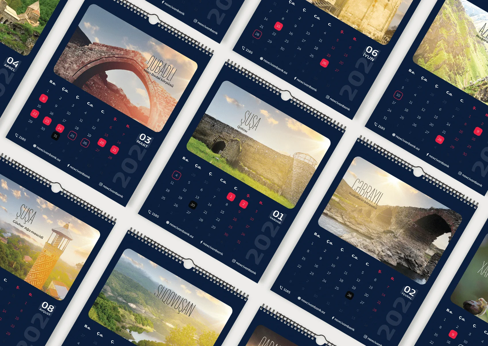
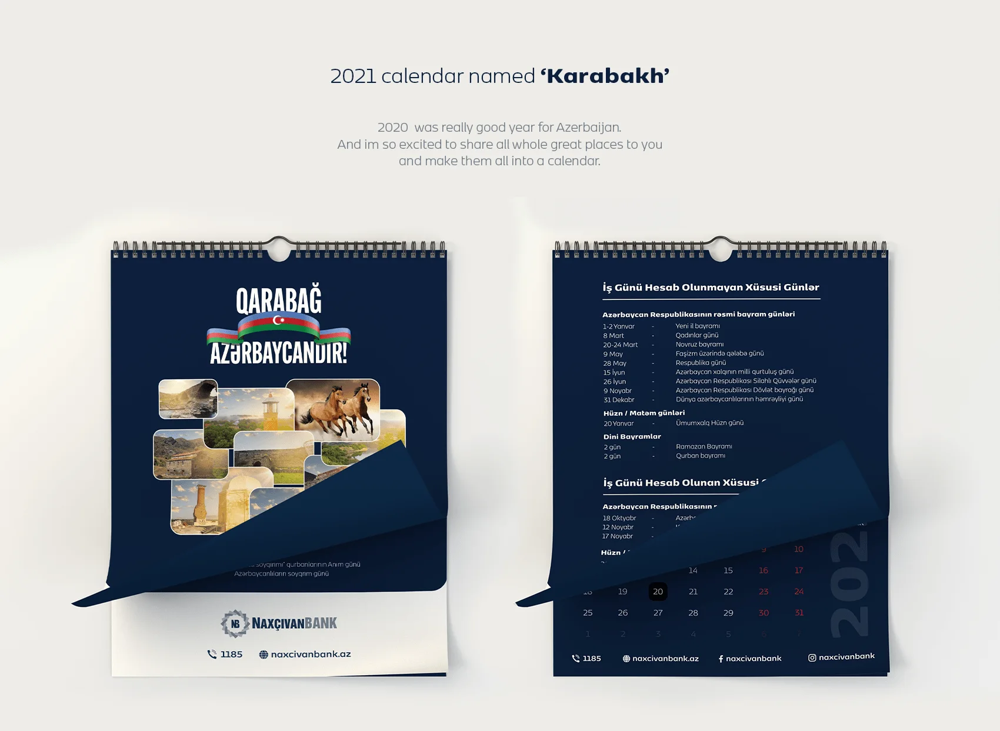
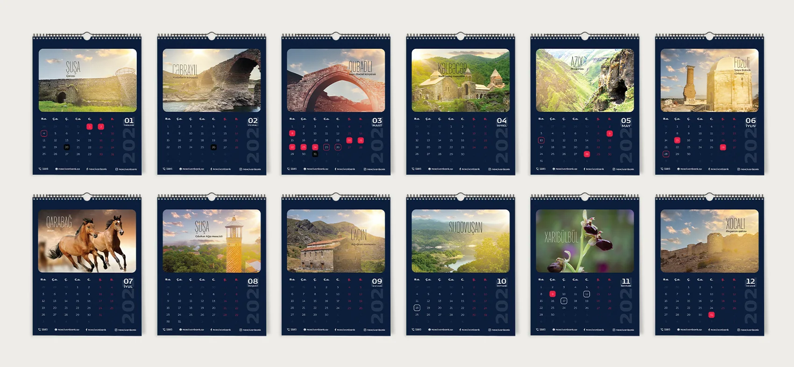
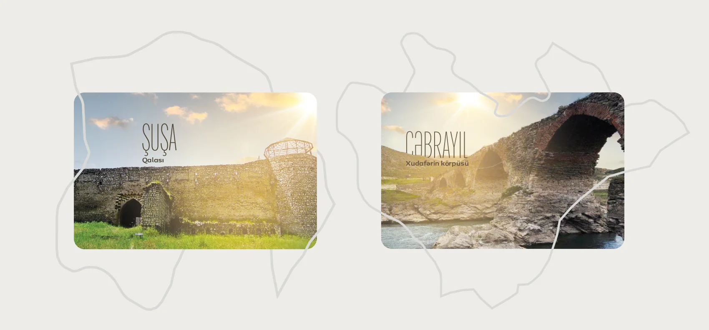
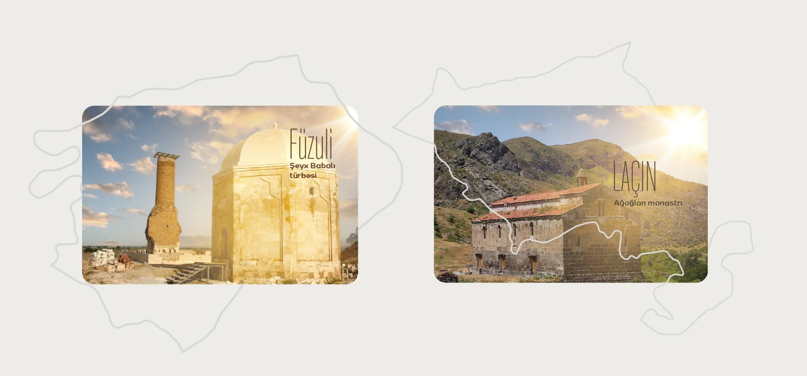
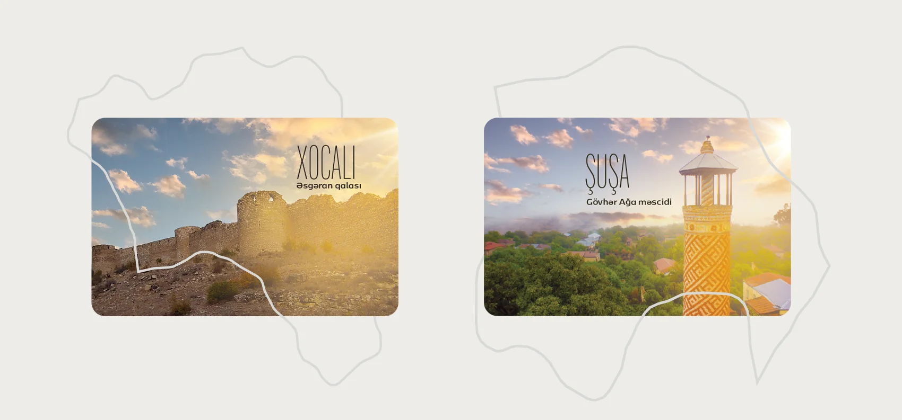
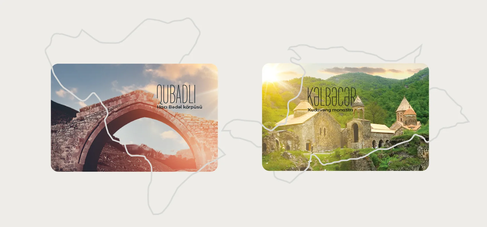
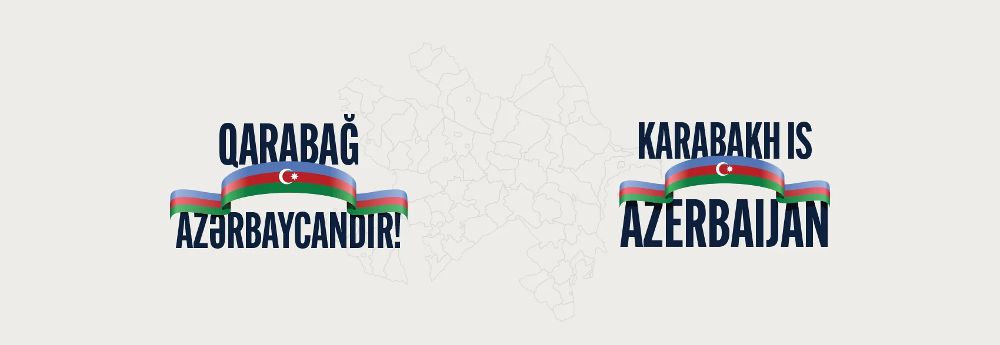

Məkan hekayəsi
Hər ay üçün seçilən məkan əsas vizual hekayəyə çevrilir.
TƏQVİM VƏ ÇAP DİZAYNI
Naxçıvanbank üçün hazırlanmış masaüstü təqvim Qarabağın tarixi və təbii məkanlarını vahid vizual sistemdə birləşdirir.

01 / İcmal
Layihə hər ayı Qarabağın fərqli bir tarixi və təbii məkanı ilə əlaqələndirir. Fotoqrafiya, xəritə konturları və Naxçıvanbankın korporativ rəngləri təqvimin bütün səhifələrində ardıcıl vizual ritm yaradır.
02 / Yanaşma
Hər ay üçün seçilən məkan əsas vizual hekayəyə çevrilir.
Təqvim şəbəkəsi məlumatı rahat oxunan və sabit strukturda saxlayır.
Rəng, ölçü və prepress detalları fiziki məhsula uyğun hazırlanıb.
03 / Vizuallar







04 / Sistem
Tünd göy fon və qırmızı vurğular bankın vizual kimliyini daşıyır; sabit aylıq şəbəkə isə bütün səhifələri vahid məhsula çevirir.
05 / Növbəti
Növbəti layihəPAŞA Kapital Promo